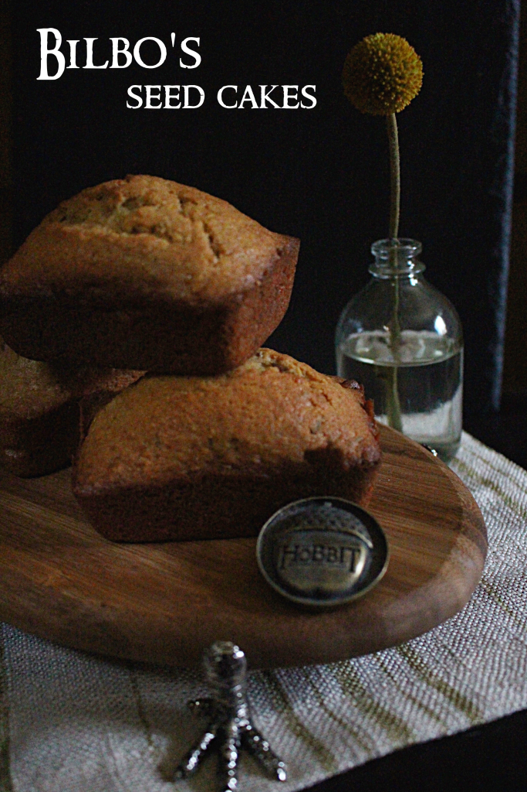

Seed Cake

Description
“Come along in, and have some tea!” he managed to say after taking a deep breath.
“A little beer would suit me better, if it is all the same to you, my good sir,” said Balin with the white
beard. “But I don't mind some cake-seed-cake, if you have any.”
“Lots!” Bilbo found himself answering, to his own surprise; and he found himself scuttling off, too, to
the cellar to fill a pint beer-mug, and to the pantry to fetch two beautiful round seed-cakes which he
had baked that afternoon for his after-supper morsel.
Ingredients
- 180 g - butter room temp.
- 180 g - granulated sugar
- 3 - eggs large
- 1 tsp - vanilla extract
- 1 - large lemon zest
- 200 g - all purpose flour
- 2 tsp - baking powder
- 1 tsp - salt
- 100 g - almond meal
- 1 1/2 tbsp - caraway seeds
Steps
- Preheat oven to 350F
- With paddle attachment, mixer butter and sugar until pale.
- Add lemon zest and vanilla extract. Mix and scrape.
- Whisk the eggs in a bowl and slowly stream the eggs into the mix on medium speed. Mix until well combined.
- Add the almond meal in two additions.
- Add the sifted flour, baking powder, and salt in three additions. Make sure to scrape the bottom and side of the bowl in between each addition.
- Add your caraway seeds and mix until combined.
- Scoop the batter into lightly greased mini loaf pans, or small cake rounds, until it/s 3/4 of the way full.
- Bake for approximately 15-20 minutes or until golden brown.
- Cool on cooling rack and serve with some fresh cream and jam.